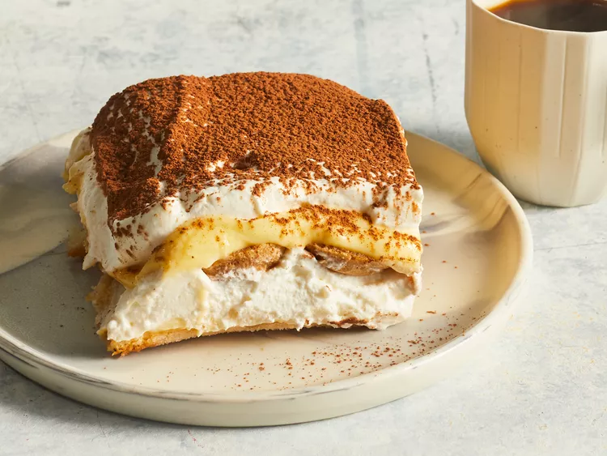

Tiramisu

What Is Tiramisu?
Tiramisu is a coffee-flavored dessert that features layers of homemade
whipped cream, an egg yolk-enriched mascarpone filling, and coffee-soaked
ladyfingers.
Ingridients:
- 6 large egg yolks
- 3/4 cup(s) white sugar
- 2/3 cup(s) milk
- 1 & 1/4 cup(s) heavy cream
- 1/2 teaspoon(s) vanilla extract
- 1 pound mascarpone cheese, at room temperature
-
1/4 cup(s) strong brewed coffee, at room temperature
- 2 tablespoon(s) rum
- 2 packages ladyfinger cookies
- 1 tablespoon(s) unsweetened cocoa powder
Execution Method:
-
Whisk egg yolks and sugar together in a medium saucepan until well
blended.
-
Whisk in milk and cook over medium heat, stirring constantly, until
mixture comes to a boil.
-
Boil gently for 1 minute, then remove from the heat and allow to cool
slightly.
- Cover tightly and chill in the refrigerator for 1 hour.
-
Beat cream and vanilla in a medium bowl with an electric mixer until
stiff peaks form.
-
Remove egg yolk mixture from the refrigerator; add mascarpone cheese and
whisk until smooth.
-
Combine coffee and rum in a small bowl. Split ladyfingers in half
lengthwise and drizzle with the coffee mixture. Arrange 1/2 of the
soaked ladyfingers in the bottom of a 7x11-inch dish.
-
Spread 1/2 of the mascarpone mixture over the ladyfingers, then spread
1/2 of the whipped cream over top. Repeat layers once more.
- Sprinkle cocoa powder over top.
- Cover and refrigerate until set, 4 to 6 hours.
- Enjoy!